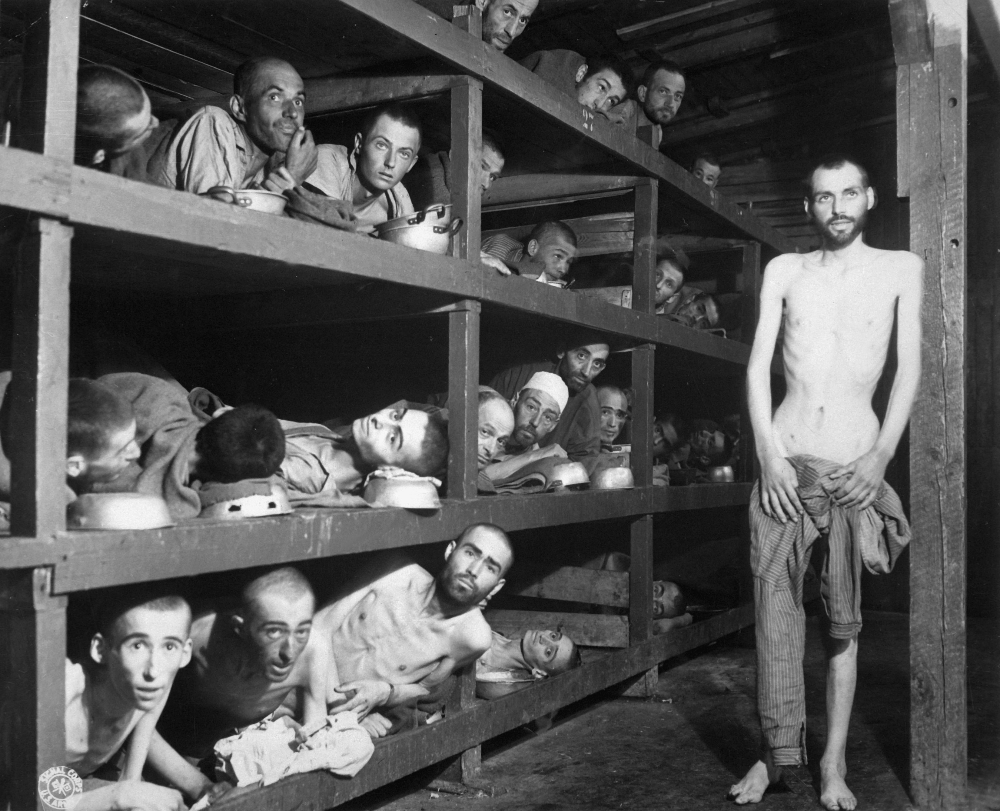

Directions: Read the full text, then answer the questions at the end.
Antisemitism, prejudice against, hatred of, or discrimination against Jews as a religious or ethnic group, was state doctrine in Nazi Germany. When Adolf Hitler became chancellor in 1933, his government began driving Jews out of public life. Jewish officials lost their posts, Jewish shops faced an official boycott, and Jewish students met barriers at schools and universities.
The Nuremberg Laws of September 1935 gave the persecution legal form. They stripped Jews of German citizenship and forbade marriage between Jews and non-Jewish Germans. In November 1938 the persecution turned to open violence. On Kristallnacht, Nazi forces burned synagogues, smashed Jewish shops, and arrested about thirty thousand Jewish men, sent to concentration camps. Many Jews tried to leave Germany.
In July 1938 delegates from thirty-two nations met at Evian in France to discuss Jewish refugees. Nation after nation expressed sympathy and then explained why it could take few or none. The United States kept its immigration quotas fixed, and most other countries kept their doors closed. The refugees remained in danger, and the German government could say that no one else wanted them either.
In May 1939 the ship St. Louis sailed from Hamburg with 937 Jewish passengers holding papers for Cuba. Cuba refused most of them entry, and the United States and Canada turned the ship away. The St. Louis returned to Europe. Later research established that about a quarter of its passengers were murdered in the Holocaust.
After Germany invaded Poland in 1939 and the Soviet Union in 1941, millions more Jews came under German control. In occupied Poland the Germans forced Jews into ghettos, sections of cities where Jews were made to live in crowded and starved conditions. The Warsaw ghetto, the largest, held more than four hundred thousand people behind walls. Hunger and disease killed tens of thousands.
Behind the advancing German army in the Soviet Union moved the Einsatzgruppen, shooting units ordered to murder Jews and others. They shot their victims at the edges of pits and ravines, town by town. At Babi Yar, a ravine outside Kyiv, they murdered nearly thirty-four thousand Jews in two days in September 1941. In all, the shooting units and those who worked with them murdered more than one million people.
From 1942 the German government carried out the Final Solution, its program to murder every Jew in Europe. Officials coordinated the plan at Wannsee in January 1942. Jews from across Europe were deported by train to killing centers built in occupied Poland, among them Auschwitz-Birkenau, Treblinka, Belzec, Sobibor, and Chelmno. At most of these camps the majority of arrivals were murdered in gas chambers within hours of arrival.
The record supports a count of six million Jews murdered, about two-thirds of the Jewish population of Europe. The murder did not stop with Jews. Roma were murdered in large numbers. People with disabilities were murdered in the T4 program. Polish and Soviet civilians were also killed, and more than three million Soviet prisoners of war died in German custody, most of them deliberately starved.
Allied governments received reports of the murders while they were happening. In August 1942 a telegram reached London and Washington reporting a German plan to murder the Jews of Europe. In December 1942 the Allied governments condemned the extermination. By 1944, escaped prisoners and Polish couriers had confirmed the killing centers. Knowledge, however, did not produce rescue on the scale of the crime.
In January 1944 the United States created the War Refugee Board, which worked in the war's last year to rescue Jews who could still be reached. Its work included support for Raoul Wallenberg in Budapest, whose papers and safe houses saved thousands. Whether Allied bombers should have struck the rail lines and the camps has been debated since the war. The documents support the debate. They do not settle it.
In the spring of 1945 Allied armies overran the camps. At Ohrdruf, the first camp American forces reached, on April 4, 1945, soldiers found the dead and the starving. General Dwight D. Eisenhower visited on April 12 and ordered the camp documented. He brought members of Congress and journalists to see it, and he wrote to Washington that he had come deliberately, so that first-hand evidence would exist if the reports were dismissed as propaganda.
At Buchenwald, liberated on April 11, American photographers recorded the barracks and the survivors. Liberation came too late for most. At camps across Europe the prisoners the armies freed numbered in the hundreds of thousands, and many died in the weeks after the soldiers arrived.

The Allies answered the crimes in a courtroom. At Nuremberg in 1945 and 1946 an international tribunal tried the surviving leaders of Nazi Germany for war crimes, violations of the laws of war for which individuals could be held responsible. Justice Robert H. Jackson, the chief American prosecutor, opened the case by promising proof from the Germans' records. The tribunal heard the evidence, convicted most of the defendants, and sentenced twelve to death. Japanese leaders were also tried, among their crimes the Bataan Death March of 1942, in which thousands of prisoners died.
1. State the two provisions of the Nuremberg Laws given in the reading, and describe what changed for German Jews in November 1938.
2. What happened at the Evian Conference in 1938 and to the ship St. Louis in 1939? What did later research establish about the passengers of the St. Louis?
3. Sections C and D describe two different methods of murder. Describe each method, and name the place or the unit the reading attaches to it.
4. State the count the record supports for Jews murdered, and name three other groups the reading names as murdered or left to die.
5. Answer in a short paragraph. What did Allied governments know by the end of 1942, what did the War Refugee Board do after January 1944, and what did Eisenhower order at Ohrdruf? Use all three parts of the record in your answer.
1. State the two provisions of the Nuremberg Laws, and describe what changed in November 1938. The laws of September 1935 stripped Jews of German citizenship and forbade marriage between Jews and non-Jewish Germans. In November 1938, on Kristallnacht, the persecution turned to open violence across the country. Nazi forces burned synagogues, smashed Jewish shops, and arrested about thirty thousand Jewish men, who were sent to concentration camps.
2. What happened at Evian and to the St. Louis, and what did later research establish? At Evian in July 1938, delegates from thirty-two nations discussed Jewish refugees and, with few exceptions, declined to admit more of them. The United States kept its immigration quotas fixed. In May 1939 the St. Louis sailed from Hamburg with 937 Jewish passengers. Cuba refused most of them entry, the United States and Canada turned the ship away, and it returned to Europe. Later research established that about a quarter of its passengers were murdered in the Holocaust.
3. Describe the two methods of murder in sections C and D. In section C, the Einsatzgruppen, special shooting units following the army into the Soviet Union, shot their victims at the edges of pits and ravines, town by town. At Babi Yar outside Kyiv they murdered nearly thirty-four thousand Jews in two days in September 1941, and the shooting units and those who worked with them murdered more than one million people in all. In section D, Jews from across Europe were deported by train to killing centers in occupied Poland, among them Auschwitz-Birkenau, Treblinka, Belzec, Sobibor, and Chelmno, where the majority of arrivals were murdered in gas chambers within hours.
4. State the count the record supports, and name three other groups. The record supports a count of six million Jews murdered, about two-thirds of the Jewish population of Europe. Any three of the following, stated accurately. Roma, murdered in large numbers. People with disabilities, murdered in the T4 program. Polish and Soviet civilians, killed in great numbers. Soviet prisoners of war, of whom more than three million died in German custody, most of them deliberately starved.
5. What did Allied governments know by the end of 1942, what did the War Refugee Board do, and what did Eisenhower order at Ohrdruf? By the end of 1942 Allied governments had received reports of the murders, including an August 1942 telegram reporting a German plan to murder the Jews of Europe, and in December 1942 they publicly condemned the extermination. The War Refugee Board, created in January 1944, worked in the war's last year to rescue Jews who could still be reached, including support for Raoul Wallenberg in Budapest, whose papers and safe houses saved thousands. At Ohrdruf in April 1945 Eisenhower ordered the camp documented, brought members of Congress and journalists to see it, and stated that he had come deliberately so that first-hand evidence would exist if the reports were dismissed as propaganda. Full credit requires all three parts, each with its date or its actor correct.